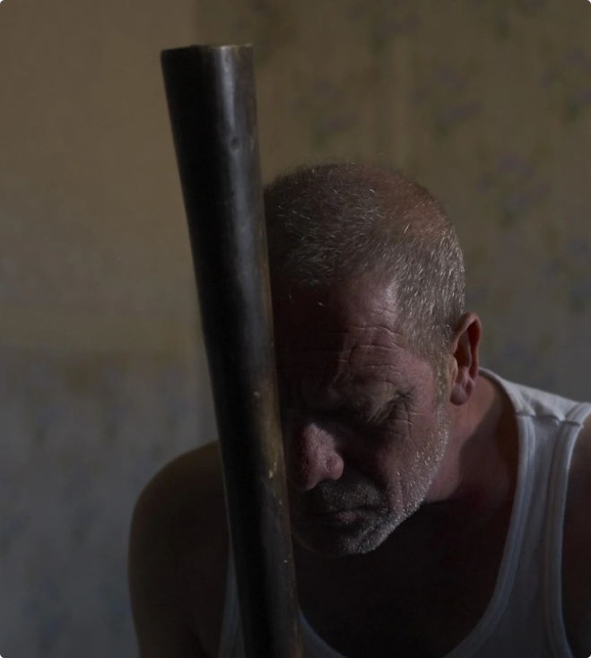

Horarios:
Jueves 2/6, 15:30 y 20:30 hs.
Viernes 3/6, 18:00 y 23:00 hs.
Sábado 4/6, 15:30 y 20:30 hs.
Domingo 5/6, 18:00 y 23:00 hs.
Jueves 2/6, 15:30 y 20:30 hs.
Viernes 3/6, 18:00 y 23:00 hs.
Sábado 4/6, 15:30 y 20:30 hs.
Domingo 5/6, 18:00 y 23:00 hs.